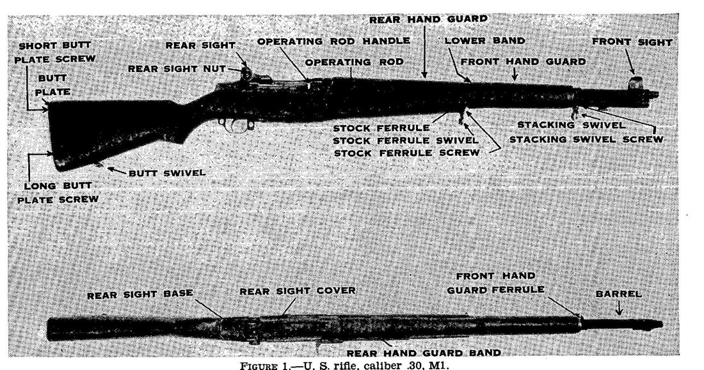
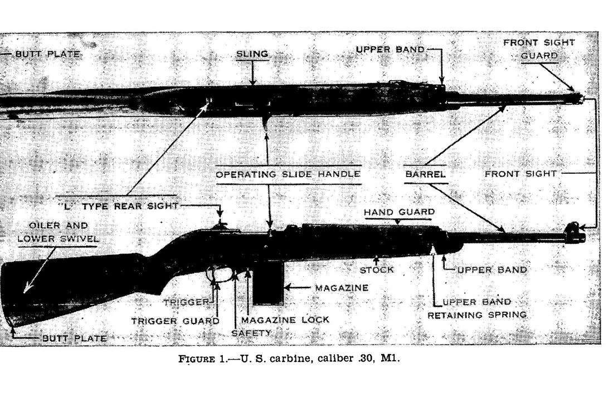
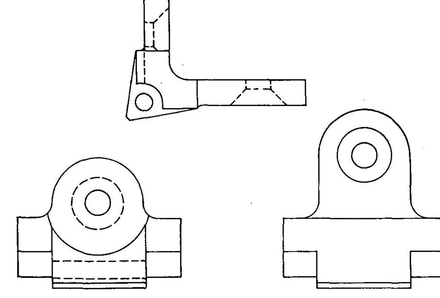
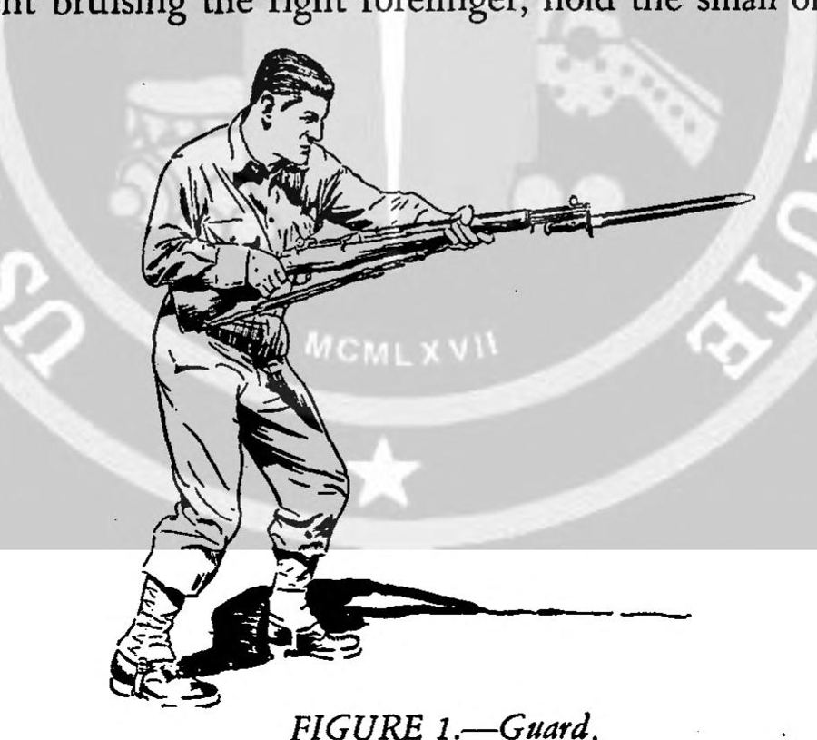
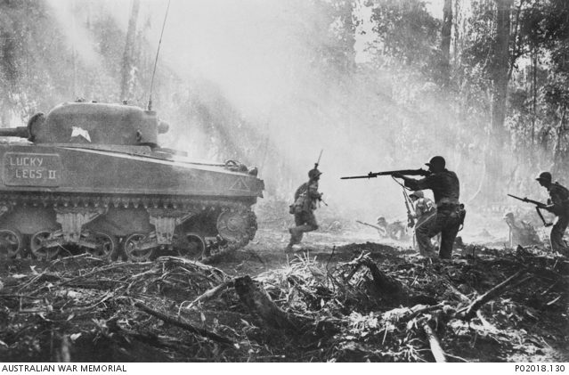
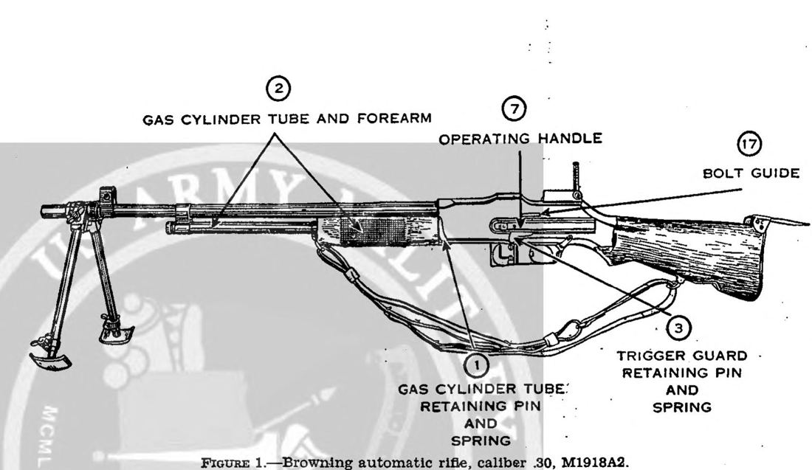

Jess Rowley’s job was the 81 mm mortar, and that gun has its own section on the main page. This page is about the weapons that were his alone: the rifle he trained with, the carbine he was handed in the Pacific, the .45 pistol, and the bayonet, which he never mentions.
In his words
“the .30-06 rifle, a .30 carbine, a .45 pistol, a Browning Automatic Rifle”
All of them
Turned in when he came home
Page last updated
November 21, 2026
Near the end of the family recording Jess lists the weapons he had over the years; the line above is that list as he gave it, at 47:02. Figures here come from the Army’s own manuals of 1940 to 1943 unless a line says otherwise. Where the manuals are silent, or where we do not know which weapon was his, the page says so.
Everything he carried on his own person, drawn at one scale beside a man of average height for the time. The mortar tube is there to show what the personal weapon was carried on top of.
The weapons beside a man
Lengths are to scale. The outlines are simplified, not portraits of the weapons.
Lengths and weights from the Army manuals for each weapon. The rifle with bayonet is the manual’s 59.2 inches. Carbine weight is without sling or magazine; loaded and slung it was 5.8 pounds. The pistol is 2.4 pounds with an empty magazine, about 2.8 loaded.
Side by side
Weapon
Weight
Holds
Bullet
Speed at the muzzle
Sights
What the manual says it is for
M1 rifleU.S. Rifle, Caliber .30, M1
9.5 lb
8, in a clip
about 150 grains
2,700 to 2,800 ft a second
to 1,200 yd
The infantryman’s main weapon. Open fire “normally” at under 600 yards.
M1 carbineU.S. Carbine, Caliber .30, M1
5.1 lb
15, in a magazine
110 grains
1,900 ft a second
150 and 300 yd
“Designed primarily to replace the pistol or revolver.” Good “at ranges up to 300 yards.”
.45 pistolPistol, Automatic, Caliber .45, M1911A1
2.4 lb
7, in a magazine
230 grains
802 ft a second
fixed
“A comparatively short-range weapon.” Its accuracy table stops at 75 yards.
Automatic rifleBrowning Automatic Rifle, M1918A2
about 20 lb
20, in a magazine
the rifle’s
the rifle’s
A rifle squad’s automatic weapon, firing at 550 or 350 rounds a minute.
A grain is a weight: 7,000 to the pound. The carbine bullet weighs a quarter of an ounce, the rifle bullet a third, the pistol bullet a little over half. The rifle bullet’s weight is not in the manuals read for this page; 150 grains is the usual figure. The pistol’s 230 grains is not printed either, but it is the weight that makes the manual’s own speed and energy agree.
How hard each one hit
Energy of the bullet as it leaves the muzzle.
The pistol figure is printed in its manual. The other two are worked out from each bullet’s weight and speed, using the slower of the two speeds the rifle manuals give. The carbine sits between the two on purpose: more than twice the pistol, about a third of the rifle.
The rifle
The rifle I trained with in Camp Roberts, I learned to love that rifle. I earned sharpshooter with it.
He calls it “the .30-06.” That is the name of the cartridge, caliber .30, adopted in 1906, and two Army rifles fired it in 1943: the new semiautomatic M1, which soldiers called the Garand, and the older bolt-action Springfield. Most likely his was the M1. The Army’s training manual and training films of that year are built around it. But nothing found so far says which rifle Camp Roberts handed its trainees in the spring of 1943, so this page does not claim it.

The M1 rifle, from the Army’s manual for it. Field Manual 23-5, 1940, figure 1.
How the M1 worked
Load. Eight cartridges come held together in a steel clip. The soldier pulls the bolt back and presses the whole clip down into the rifle. The bolt runs forward and pushes the first round into the barrel.
Fire. One squeeze of the trigger fires one shot.
Gas does the work. Near the muzzle a small hole lets some of the powder gas push a rod back along the barrel. The rod unlocks the bolt, throws out the empty case and cocks the hammer.
Spring returns it. A spring drives the bolt forward again with the next round. The rifle is ready as fast as the soldier can aim.
Empty. After the eighth shot the bolt stays open and the empty clip is thrown clear.
Field Manual 23-5, U.S. Rifle, Caliber .30, M1 (1940), paragraphs 19 and 23 to 27. The five steps are this page’s summary; the manual does not number them.
What a trainee had to know
The sight. A peephole at the back, a post at the front. Two knobs moved the peephole, and each click moved the bullet about one inch at 100 yards, so five inches at 500. The range knob was marked out to 1,200 yards.
When it stopped. The drill was called immediate action: pull the bolt handle all the way back, let it go, aim and fire again. If that failed he looked for a dented round or dirt.
Cleaning. The barrel was cleaned by the evening of the day it was fired and again on each of the next three days. Hot soapy water, then dry patches, then oil.
Reach. The bullet could travel about two miles. The manual tells riflemen to hold their fire until they are closer than 600 yards.
Field Manual 23-5 (1940), paragraphs 10 to 12, 29, 34, 45 and 137.
What “sharpshooter” meant
The rifle course a trainee fired for record, and the score each badge took.
Forty-two shots in all: slow fire kneeling, standing, sitting and lying down, then timed strings in which he dropped from standing into position, fired, reloaded and fired again. Five hundred yards is five football fields. Sharpshooter was the middle of three badges, and each took the score shown or better.
These are the course and scores in the rifle manuals of July and September 1943, printed just after Jess finished at Camp Roberts. The regulation in force during his own weeks on the range, Army Regulations 775-10, has not been found, so the exact course and score he fired are not known. The three grades were the same.
Not known
Which rifle he trained with. Whether he carried an M1 rifle at any time overseas: landing on Luzon he says he had “a pistol, a rifle,” and he may have meant his carbine.
The carbine
I was trained as a rifleman, to carry a .30-06. Down here they issued me a little .30 carbine, going into heavy weapons, in the mortars. I didn’t know a thing about the gun and was going to the front line. I said, “Well, give me some boxes of shells. I’m going in the jungle to learn something about this gun.” And so I did.
The carbine was a new weapon in 1943, and it was made for men like him. A mortar crew, a machine gun crew, a driver or a wire man already had his hands full, and the Army had been giving such men a pistol. The carbine was the answer: half the weight of the rifle, fifteen cartridges to the pistol’s seven, and a real chance of a hit at 200 or 300 yards where a pistol had none. Its cartridge was its own, shorter and lighter than the rifle’s, so the two could not share ammunition.

The M1 carbine as first issued. Field Manual 23-7, 1942, figure 1.

The rear sight on the early carbines: a leaf that flipped between two peepholes, one for 150 yards and one for 300. For anything between, the manual says, the soldier had to “aim off the target.” Field Manual 23-7, figure 2.
The record
The manual: the carbine “was designed primarily to replace the pistol or revolver. It is highly effective at close quarters and at ranges up to 300 yards.”
It worked the way the rifle did, by gas, one shot for each squeeze. It loaded from a 15-round box magazine pushed in from below.
The manual set a goal for training of “25 or more accurate shots per minute.”
It had no bayonet. The 1942 manual never uses the word. A fitting for one was added to carbines late in the war, by later accounts in 1945.
An Army pamphlet of 1944 that collected lessons from the field reported on patrols in the jungle: “The shorter weapons (submachine gun and carbine) were preferred by small patrols as they were easier to carry and aim in the jungle growth.”
Later writers record a complaint as well, that in close fighting the light bullet did not always stop a man. No wartime Army report saying so was found for this page.
Field Manual 23-7, U.S. Carbine, Caliber .30, M1 (1942), paragraphs 1 to 4, 55 and 86; War Department, Combat Lessons No. 4 (1944).
Memory and record
Jess says he was handed a weapon he had never fired and taught himself in the jungle with a few boxes of shells. That fits. He trained as a rifleman, and the rifleman’s course was fired with the rifle. The carbine was a new weapon, its manual dated May 1942.
The pistol
Jess names “a .45 pistol” among the weapons he had, and he lists a pistol in what he carried ashore on Luzon in January 1945. The Army’s .45 was the Model 1911A1, a design then more than thirty years old.
The pistol, from its manual. Field Manual 23-35, 1940, figure 2. The pale seal across the picture is the stamp of the Army library that scanned its copy.
The record
Seven cartridges in a magazine inside the grip. One shot for each squeeze. After the last shot the slide stays back to show the pistol is empty.
The recoil of each shot throws out the empty case, cocks the hammer and loads the next round.
Three things kept it from firing by accident: a lever under the thumb, a plate in the back of the grip that had to be squeezed by the hand, and a catch inside that blocked the hammer unless the action was fully closed.
How to carry it, from the manual: with no fight expected, a full magazine in the grip and the chamber empty. With a fight likely, “loaded and locked in the holster or hand.”
The manual calls it “a comparatively short-range weapon.” Its bullet was heavy and slow. At the muzzle it carried about a third of the carbine’s energy.
What all the personal weapons were for in a heavy weapons company, from that company’s own manual: “the emergency defense of the individual, groups, crew-served weapons, and company installations.”
Field Manual 23-35, Automatic Pistol, Caliber .45, M1911 and M1911A1 (1940), paragraphs 1, 2, 13 and 25; Field Manual 7-15, Heavy Weapons Company, Rifle Regiment (1942), paragraph 4.
In a mortar squad the pistol was the weapon of the men who handled the gun itself. That matters for what Jess’s job was, and it is taken up under Who carried what.
The bayonet
Jess does not mention a bayonet anywhere in the recording. What follows is what the Army taught every infantry trainee of his year, and what the men around him had.

“Guard,” the position every movement started from. Field Manual 23-25, September 1943, figure 1. The pale seal is the scanning library’s stamp.
The record
Training. The bayonet manual of 1943 lays out ten lessons of no more than 50 minutes each: the guard, the long and short thrust, strokes with the rifle butt, parries, then running at dummies and fighting in pairs and threes over an assault course of 200 to 300 yards. He trained as a rifleman, so he would have done this.
Two lengths. The Army’s bayonet had a 16-inch blade. During 1943 it began issuing one with a 10-inch blade, and cutting old ones down. Either could be found in the Pacific. These dates are from collectors’ references, not from an Army document read for this page.
None for the carbine. A bayonet fixes to a rifle. The carbine of 1943 and 1944 had nowhere to put one, and a pistol has none. A mortarman with a carbine or a pistol had no bayonet.
A knife instead. From 1943 the Army issued a fighting knife with a blade under seven inches to men whose weapon took no bayonet. Whether Company H had them is not known. This too is from later references.
Field Manual 23-25, Bayonet (September 7, 1943), paragraphs 21 and 25; Field Manual 23-7 (1942).

Riflemen of the 129th Infantry with bayonets fixed, beside the tank “Lucky Legs II” on Bougainville, March 1944. These are men of the rifle companies in front of Jess’s mortars. Australian War Memorial, public domain.
Not known
Whether Jess was ever issued a bayonet or a knife overseas, and whether anyone in his battalion used one in the March 1944 fighting. Nothing in the records read so far says.
The automatic rifle
The last weapon on his list is “a Browning Automatic Rifle.” It fired the rifle’s cartridge from a 20-round magazine, as fast as a machine gun, and weighed twice what a rifle did. Every rifle squad had one. A mortar squad did not.

The Browning Automatic Rifle, Model 1918A2. Field Manual 23-15, June 1943, figure 1. The pale seal is the scanning library’s stamp.
The record
About 20 pounds with its sling. A filled magazine added a pound and seven ounces.
A lever chose between two speeds, about 550 rounds a minute and about 350. In practice, the manual says, the most a gunner could usefully fire was 120 to 150 a minute, and 40 to 60 if he had to keep it up.
The table that set out a heavy weapons company in 1944 lists no automatic rifle at all.
The company’s 1942 manual gives it one use there: guarding the trucks against aircraft. “One Browning automatic rifle is mounted on a pedestal mount on one weapon carrier in each section of the company,” with a man told off to ride with it.
Field Manual 23-15, Browning Automatic Rifle, Caliber .30, M1918A2 (1943), paragraphs 2 and 3; Field Manual 7-15 (1942), paragraph 4; Table of Organization and Equipment 7-18 (February 26, 1944).
Not known
When Jess had one. He may have fired it in training at Camp Roberts, where he was being made a rifleman. He may have been the man on the truck. Units in the Pacific also picked up weapons their tables did not give them. He does not say, and no record found so far does.
Who carried what
The Army wrote down, job by job, which weapon each man in a company was to carry. For Jess’s kind of company the table of February 1944 survives, and it lets us read his own list of weapons as a record of the jobs he held.
An 81 mm mortar squad, by the table
Eight men, one mortar, one jeep and trailer.
The squad leader was a staff sergeant and the gunner a corporal. The table adds a line of its own: “The number 3 man in 81-mm mortar squad is armed with pistol.” The men who lifted and served the gun got the lightest weapon. The men who fetched shells, and guarded the gun when they were not fetching, got the carbine.
The whole company
Company H at full strength, 160 officers and men. One square is one man’s weapon.
More than half the company carried the carbine.
What this may say about Jess
In October 1943, joining the mortars, he was issued a carbine. By the table that is an ammunition bearer’s weapon, which is where a new man would start.
In January 1945 he went ashore on Luzon with a pistol and a piece of the mortar on his back. By the table the pistol belongs to the gunner, the assistant gunner and the number 3 man: the men who carried and served the gun.
He came home a corporal. In a mortar squad the table gives that rank to one man, the gunner.
So his weapons, in the order he had them, trace a man moving from the ammunition to the gun. This is a reading of the table against his own words, not a record. No paper found so far names his position in the squad, and a company in the field did not always match its table.
War Department, Table of Organization and Equipment 7-18, Infantry Heavy Weapons Company, February 26, 1944, with Changes No. 1 of June 30, 1944, read in a typed transcription at militaryresearch.org, not in a photograph of the original. The table in force when he joined, dated July 15, 1943, has not been found.
Manuals and films
Every manual below is a War Department publication in the public domain, scanned at the Internet Archive. They are the books a soldier’s instructors taught from.
Titles are from each film’s catalog page at the Internet Archive. We have not watched them through. No wartime training film on the carbine or the pistol was found.
Still to find
Which rifle Camp Roberts issued in the spring of 1943. A class book or a training photograph would settle it.
The 1943 regulation that set the rifle course and the scores he fired.
His position in the mortar squad. The 1945 company reports, not yet released, may show his promotions.
His discharge paper, which lists the weapons he qualified with and the badge he earned.